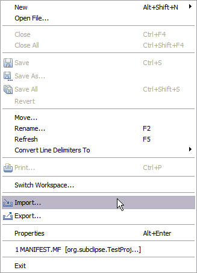

You are already an existing Subversion user and you have a working copy on your disk. You want to just use that same working copy inside Eclipse so that you do not have to maintain two copies. Fortunately, Subclipse and Eclipse support this scenario. The only requirement is that your working copy has to also be a valid Eclipse project. This means that it must containg an Eclipse .project file as well as any other files like the Java .classpath file that are needed by Eclipse. If necessary, create a "dummy" project in Eclipse and copy the files Eclipse creates into your working copy folder.
To add the existing Eclipse project to your Eclipse workspace use the Eclipse File > Import menu option.
This will bring up the Eclipse Import dialog.

Select the "Existing Projects into Workspace" option and click Next

The above dialog is from Eclipse 3.1. The dialog on Eclipse 3.0 is a little different, mainly that you can only import one project at a time. In this example, I have the entire Subclipse folder checked out from the Subclipse repository to my disk. When I select that folder, Eclipse automatically shows all of the projects it finds in that folder. You can select the ones that you want to import into your workspace and click Finish.
If you are on Eclipse 3.1, after the Import completes, Subclipse should automatically recognize the addition of these projects and connect the Subclipse actions to the projects. In Eclipse 3.0, you have to manually register the projects with Subclipse. See: Connect an Existing Project with Subclipse for details.
This option sounds like Eclipse is going to copy the projects into your workspace, but in actuality it only creates a pointer to the location on disk which is what we want.
This is a great option to use if you have a need to use Subversion clients other than Subclipse and/or you already have an existing working copy on your disk and want to avoid the checkout process. In the example provided above, a second benefit is that you have a "single-rooted" working copy that contains multiple projects. This means that you can do an atomic commit of changes from several projects by using the Subversion command line or another Subversion client. We hope to be able to eventually recognize this scenario and support it in Subclipse as well.